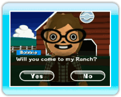
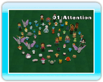
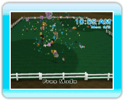

Ranch Level
The Ranch's level is determined by the size of the Ranch. The
larger the Ranch gets, the higher the Ranch's level.
Level Up the Ranch
 When you bring a certain number of
Pokémon to the Ranch, Hayley will level up your Ranch and
expand it by the next day.
When you bring a certain number of
Pokémon to the Ranch, Hayley will level up your Ranch and
expand it by the next day.
Features available after
the Ranch's level gets higher
- The number of Pokémon or Miis you can bring to your
Ranch rises.
- Free Mode becomes available.
- You can add Pokémon to Favorites and bring only
those Pokémon to the Ranch.
-
You will receive more Toy Boxes. (→p.21) When you press
 +
+  to grab one and then release it, a Toy will come
out.
to grab one and then release it, a Toy will come
out.
- You can often trade a Pokémon with Hayley.
Events available without
a high-level Ranch
- When you start the game, you get
invited to a Ranch by an owner.
- Fun things
happen if you deposit a certain number of Pokémon or a
certain kind of Pokémon.
What happens if I shake
the Wii Remote?
- When you
are playing a game and you shake the Wii Remote controller,
something interesting will happen.